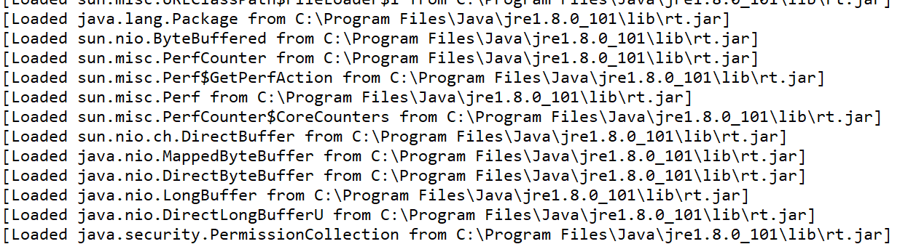

垃圾收集器
概述
本文章参考周志明的【深入理解Java虚拟机】
java与C++支架有一堵由内存动态分配和垃圾收集技术所围成的“高墙”，墙外面的人想进去，墙里面的人却想出来。
GC的概述
1.GC：Garbage Collection 垃圾收集。这里所谓的垃圾指的是在系统运行过程当中所产生的一些无用的对象，这些对象占据着一定的内存空间，如果长期不被释放，可能导致OOM。
在C/C++里是由程序猿自己去申请、管理和释放内存空间，因此没有GC的概念。而在Java中，后台专门有一个专门用于垃圾回收的线程来进行监控、扫描，自动将一些无用的内存进行释放，这就是垃圾收集的一个基本思想，目的在于防止由程序猿引入的人为的内存泄露。
2.内存区域中的程序计数器、虚拟机栈、本地方法栈这3个区域随着线程而生，线程而灭；栈中的栈帧随着方法的进入和退出而有条不紊地执行着出栈和入栈的操作，每个栈帧中分配多少内存基本是在类结构确定下来时就已知的。在这几个区域不需要过多考虑回收的问题，因为方法结束或者线程结束时，内存自然就跟着回收了。
而Java堆和方法区则不同，一个接口中的多个实现类需要的内存可能不同，一个方法中的多个分支需要的内存也可能不一样，我们只有在程序处于运行期间时才能知道会创建哪些对象，这部分内存的分配和回收都是动态的，GC关注的也是这部分内存，后面的文章中如果涉及到“内存”分配与回收也仅指着一部分内存。
对象存活算法
堆中几乎存放着Java世界中所有的对象实例，垃圾收集器在对堆回收之前，第一件事情就是要确定这些对象哪些还“存活”着，哪些对象已经“死去”(即不可能再被任何途径使用的对象).
1.引用计数算法
很多教科书判断对象是否存活的算法是这样的：给对象中添加一个引用计数器，每当有一个地方引用它时，计数器值加1；当引用失效时，计数器减1；任何时刻计数器都为0的对象就是不可能再被使用的。
引用计数算法的实现简单，判断效率也很高，在大部分情况下它都是一个不错的算法。但是Java语言中没有选用引用计数算法来管理内存，其中最主要的一个原因是它很难解决对象之间相互循环引用的问题。
例子：
1 | public class ReferenceCountingGC { |
运行结果：
从结果中可以看出虚拟机启动GC后，日志中包含“6758K -> 592K”(红色的框)，意味着虚拟机并没有因为这两个对象相互引用就不回收它们，这也从侧面说明虚拟机并不是通过引用计数算法来判断对象是否存活的。
2.可达性分析算法
在主流的商用程序语言中(Java和C#)，都是使用可达性分析算法判断对象是否存活的。这个算法的基本思路就是通过一系列名为”GC Roots”的对象作为起始点，从这些节点开始向下搜索，搜索所走过的路径称为引用链(Reference Chain)，当一个对象到GC Roots没有任何引用链相连时，则证明此对象是不可用的，下图对象object5, object6, object7虽然有互相判断，但它们到GC Roots是不可达的，所以它们将会判定为是可回收对象。
在Java语言里，可作为GC Roots对象的包括如下几种：
a.虚拟机栈(栈桢中的本地变量表)中的引用的对象
b.方法区中的类静态属性引用的对象
c.方法区中的常量引用的对象
d.本地方法栈中JNI的引用的对象
引用
Java中的垃圾回收一般是在Java堆中进行，因为堆中几乎存放了Java中所有的对象实例。谈到Java堆中的垃圾回收，自然要谈到引用。无论通过引用计数算法判断对象的引用数量，还是通过可达性分析算法判断对象的引用链是否可达，判定对象是否存活都与引用有关。在JDK1.2之前，Java中的引用定义很很纯粹：如果reference类型的数据中存储的数值代表的是另外一块内存的起始地址，就称这块内存代表着一个引用。但在JDK1.2之后，Java对引用的概念进行了扩充，将其分为强引用（Strong Reference）、软引用（Soft Reference）、弱引用（Weak Reference）、虚引用（Phantom Reference）四种，引用强度依次减弱。
a.强引用：如“Object obj = new Object（）”，这类引用是Java程序中最普遍的。只要强引用还存在，垃圾收集器就永远不会回收掉被引用的对象。
b.软引用：它用来描述一些可能还有用，但并非必须的对象。在系统内存不够用时，这类引用关联的对象将被垃圾收集器回收。JDK1.2之后提供了SoftReference类来实现软引用。
c.弱引用：它也是用来描述非需对象的，但它的强度比软引用更弱些，被弱引用关联的对象只能生存岛下一次垃圾收集发生之前。当垃圾收集器工作时，无论当前内存是否足够，都会回收掉只被弱引用关联的对象。在JDK1.2之后，提供了WeakReference类来实现弱引用。
d.虚引用：最弱的一种引用关系，完全不会对其生存时间构成影响，也无法通过虚引用来取得一个对象实例。为一个对象设置虚引用关联的唯一目的是希望能在这个对象被收集器回收时收到一个系统通知。JDK1.2之后提供了PhantomReference类来实现虚引用。
回收方法区
很多人认为方法区（或者HotSpot虚拟机中的永久代）是没有垃圾收集的，java规范中确实说过可以不要求虚拟机在方法区实现垃圾收集，在方法区进行垃圾收集的性价比很低，在堆中，尤其是在新生代中，常规应用进行一次垃圾收集一般可以回收70%-95%的空间，而永生代垃圾收集率远低于此。
永生代的垃圾收集主要回收两个部分内容：废弃常量和无用的类
判定一个常量是否是“废弃常量”比较简单，而要判定一个类是否是“无用类”的条件相对苛刻，类需满足下面3个条件：
1.该类所有的实例都已经被回收，也就是java堆中不存在该类的任何实例
2.加载该类的ClassLoader已经被收回
3.该类对应的java.lang.Class对象没有在任何地方被引用，无法在任何地方通过反射访问该类的方法。
在大量使用反射，动态代理，CGLib等ByteCode框架，动态生成JSP以及OSGi这类频繁自定义ClassLoader的场景都需要虚拟机具备类卸载的功能，以保证永久代不会溢出。
垃圾收集算法
1.标记-清除算法
标记—清除算法是最基础的收集算法，它分为“标记”和“清除”两个阶段：首先标记出所需回收的对象，在标记完成后统一回收掉所有被标记的对象，它的标记过程其实就是前面的根搜索算法中判定垃圾对象的标记过程。如图：
缺点：
①.效率问题：标记清除过程效率都不高。
②.空间问题：标记清除之后会产生大量的不连续的内存碎片(空间碎片太多可能会导致以后在程序运行过程中需要分配较大的对象时，无法找到足够的连续的内存空间而不得不提前触发另一次垃圾收集动作。）
2.复制算法
复制算法是针对标记—清除算法的缺点，在其基础上进行改进而得到的，它讲课用内存按容量分为大小相等的两块，每次只使用其中的一块，当这一块的内存用完了，就将还存活着的对象复制到另外一块内存上面，然后再把已使用过的内存空间一次清理掉。复制算法有如下优点：
每次只对一块内存进行回收，运行高效。
只需移动栈顶指针，按顺序分配内存即可，实现简单。
内存回收时不用考虑内存碎片的出现。
它的缺点是：可一次性分配的最大内存缩小了一半。
3.标记-整理算法
复制收集算法在对象存活率较高时就要进行较多的复制操作，效率将会变低，更关键的是，如果不想浪费50%的空间，就需要有额外的空间进行分配担保，以应对被使用的内存中所有对象都100%存活的极端情况，所以在老年代（后面会讲到）一般不能直接选用这种算法。
根据老年代的特点，有人提出“标记-整理（Mark-Compact）”算法,标记过程仍与“标记-清除”一样，但后续不是直接对可回收对象进行清理，而是让所有的对象都向一端移动，然后直接清理掉端边界以外 的内存。如图：
4.分带收集算法
当前商业虚拟机的垃圾收集 都采用分代收集，它根据对象的存活周期的不同将内存划分为几块，一般是把Java堆分为新生代和老年代。在新生代中，每次垃圾收集时都会发现有大量对象死去，只有少量存活，因此可选用复制算法来完成收集，而老年代中因为对象存活率高、没有额外空间对它进行分配担保，就必须使用标记—清除算法或标记—整理算法来进行回收。
垃圾收集器
HotSpot虚拟机实现的垃圾收集器可以参考下面的博客，内容很详细
Chang_Wen_Liu博客: http://blog.csdn.net/ochangwen/article/details/51412595
我在学习java虚拟机的时候看到一篇对本节的知识点介绍比较好理解的文章，如果大家对以上的概念有不理的地方，我想下面的这篇博客可以给你启发（图比较多，更有助于理解，无言表达比较容易懂）：
常用JVM配置参数
Trace跟踪参数
1.打开GC开关
-verbose:gc
-XX:+printGC
这两个是一样的，可以粗糙的认为其中一个相当于另一个的别名。
在IDE的后台打印GC日志：本实例以eclipse为例
既然学习JVM，阅读GC日志是处理Java虚拟机内存问题的基础技能，它只是一些人为确定的规则，没有太多技术含量。
结果：
虽然可以打印出一部分GC内容，但是这还是远远不够的，一下接收的和参数的配置方式和图中 的一样。
2.打印GC详细信息
-XX:+PrintGCDetails
打印的GC结果
3.打印CG发生的时间戳
-XX:+PrintGCTimeStamps
4.指定GC log的位置：
-Xloggc:log/gc.log
5.每一次GC前和GC后，都打印堆信息
-XX:+PrintHeapAtGC
6.监控类的加载
-XX:+TraceClassLoading

理解GC日志的内容：
每一种收集器的日志形式都是有它们自身的实现所决定的，换言之，每个收集器的日志格式都可以不一样，但虚拟机设计者为了方便用户阅读，讲个收集器的日志都维持一定的共性。例如：
GC日志开头的“[GC”和”[Full GC” 是表示这次垃圾收集的停顿时间，而不是用来区分新生代GC还是老生代GC的，如果有Full，说明这次的GC是发生了Stop-The-Word（下面介绍）的。
接下来“[PSYoungGen”，“[ParOldGen”表示GC发生的区域，这里显示的区域名称与使用的GC收集器密切是相关的，例如使用Serial收集器，则新生代名为“Default New Generation” 所以会显示“[DefNew”，如果是ParNew收集器，新生代会显示“[ParNew”，如果采用Parallel Scavenge收集器，那么新生代称为“PaYoungGen”，老年代和永久代同理，名称也是由收集器决定的。
后面的2662K->696K(38400K) 含义是“GC前该内存区域已使用的容量–> GC后该内存区域使用的容量（该内存区域总容量）”，而方括号之外的“2662K->704K(125952K)”表示“GC前java对已使用容量 —> GC后java堆已使用容量（java堆总容量）”，在后面“0.0061965 secs”表示该内存区域GC所占用的时间，单位是秒。
-XX:+PrintGCDetails打印结果：
heap区又分为：
- Eden Space（伊甸园）、
- Survivor Space(幸存者区)、
- Old Gen（老年代）。
Eden Space字面意思是伊甸园，对象被创建的时候首先放到这个区域，进行垃圾回收后，不能被回收的对象被放入到空的survivor区域。
Survivor Space幸存者区，用于保存在eden space内存区域中经过垃圾回收后没有被回收的对象。Survivor有两个，分别为To Survivor、 From Survivor，这个两个区域的空间大小是一样的。执行垃圾回收的时候Eden区域不能被回收的对象被放入到空的survivor（也就是To Survivor，同时Eden区域的内存会在垃圾回收的过程中全部释放），另一个survivor（即From Survivor）里不能被回收的对象也会被放入这个survivor（即To Survivor），然后To Survivor 和 From Survivor的标记会互换，始终保证一个survivor是空的。
图中的from space对应的就是From Survivor，to space 对应的是ToServivor。
Eden Space和Survivor Space都属于新生代，新生代中执行的垃圾回收被称之为Minor GC（因为是对新生代进行垃圾回收，所以又被称为Young GC），每一次Young GC后留下来的对象age加1。
Old Gen老年代，用于存放新生代中经过多次垃圾回收仍然存活的对象，也有可能是新生代分配不了内存的大对象会直接进入老年代。经过多次垃圾回收都没有被回收的对象，这些对象的年代已经足够old了，就会放入到老年代。
当老年代被放满的之后，虚拟机会进行垃圾回收，称之为Major GC（不是Minor GC）。由于Major GC除并发GC外均需对整个堆进行扫描和回收，因此又称为Full GC。
MinorGC和Full GC区别 - 新生代GC（Minor GC）：指发生在新生代的垃圾收集动作，因为Java对象大多都具备朝生夕死的特性，所以Minor GC非常的频繁，一般回收速度也比较快。
- 老年代GC（Major GC/Full GC）:指发生在老年代的GC，出现了Major GC，经常会伴随至少一次的Minor GC（并非绝对，在Parallel Scavenge收集器的收集策略里就有直接进行Major GC的策略选择过程）。Major GC的速度一般比Minor GC 慢10倍以上。
上图中，我们先看一下“[0x00000000d5e00000, 0x00000000d8880000, 0x0000000100000000)”（PSYoungGen后方括号里的内容）的含义，它表示新生代在内存当中的位置：第一个参数是申请到的起始位置，第二个参数是申请到的终点位置，第三个参数表示最多能申请到的位置。上图中的例子表示新生代申请到了43M的控件，而这个43M是等于：（eden space的33280K）+（from space的5120K）+（to space的5120K）。
疑问：分配到的新生代有43M，但是可用的只有38400K，为什么会有这个差异呢？
这里还是因为Survivor Space幸存者区，这个区有两个分别为To Survivor、 From Survivor，其中的一个区被要求用来放不能被回收的对象，所有能放新对象的区域只有 Eden space和Survivor Space中的一个。
Stop-The-Word：
1、Stop-The-World概念：
Java中一种全局暂停的现象。全局停顿，所有Java代码停止，native代码可以执行，但不能和JVM交互，多半情况下是由于GC引起。
少数情况下由其他情况下引起，如：Dump线程、死锁检查、堆Dump。
2、GC时为什么会有全局停顿？
（1）避免无法彻底清理干净
打个比方：类比在聚会，突然GC要过来打扫房间，聚会时很乱，又有新的垃圾产生，房间永远打扫不干净，只有让大家停止活动了，才能将房间打扫干净。
况且，如果没有全局停顿，会给GC线程造成很大的负担，GC算法的难度也会增加，GC很难去判断哪些是垃圾。
（2）GC的工作必须在一个能确保一致性的快照中进行。
这里的一致性的意思是：在整个分析期间整个执行系统看起来就像被冻结在某个时间点上，不可以出现分析过程中对象引用关系还在不断变化的情况，该点不满足的话分析结果的准确性无法得到保证。
这点是导致GC进行时必须停顿所有Java执行线程的其中一个重要原因。
堆的分配参数
1.-Xmx –Xms：指定最大堆和最小堆
案例：-Xmx20m -Xms5m
指定最大堆内存20M，最小堆内存5M。
2.设置新生代大小
-Xmn
3.新生代和老年代的比值
-XX:NewRatio
比如：-XX:NewRatio=4 表示新生代:老年代=1:4，即新生代占整个堆的1/5
4.设置两个Survivor区和Eden的比值
-XX:SurvivorRatio
例如：值为8时，表示两个Survivor:eden=2:8，即一个Survivor占年轻代的1/10
先运行一下代码：1
2
3
4
5
6
7
8package com.fan.JVMDemo;
public class JavaTest {
public static void main(String[] args) {
byte[] b = null;
for (int i = 0; i < 10; i++)
b = new byte[1 * 1024 * 1024];
}
}
然后我们通过设置不同的GC参数来看看输出结果有什么不同：
- -Xmx20m -Xms20m -Xmn1m -XX:+PrintGCDetails （设置新生代大小为1M）
结果进行了一次GC，Allocation Failure – 引起垃圾回收的原因. 本次GC是因为年轻代中没有任何合适的区域能够存放需要分配的数据结构而触发的. - -Xmx20m -Xms20m -Xmn15m -XX:+PrintGCDetails（新生代15M，足够大）
结果没有进行GC，老年代也没有使用到。所有都分配到Eden space。 - -Xmx20m -Xms20m –Xmn7m -XX:+PrintGCDetails（新生代大小7M）
结果进行了两次GC，老年代中使用了2152K，survivor太小需要老年代担保。 - -Xmx20m -Xms20m -Xmn7m -XX:SurvivorRatio=2 -XX:+PrintGCDetails（增加幸存带的大小）
进行了三次GC。
在新生代相同的情况下，增加了幸存带，老年代的使用减小了。
结论：通过对GC参数的调整可以调成程序的运行速度，根据GC的值可以对程序进行优化。
5.OOM时导出堆信息到文件，根据这个文件，我们可以看到系统dump时发生了什么。
-XX:+HeapDumpOnOutOfMemoryError
6.导出OOM的路径
-XX:+HeapDumpPath
例如：-Xmx20m -Xms5m -XX:+HeapDumpOnOutOfMemoryError -XX:HeapDumpPath=d:/a.dump
上方意思是说，现在给堆内存最多分配20M的空间。如果发生了OOM异常，那就把dump信息导出到d:/a.dump文件中。
栈的分配参数
-Xss
设置栈空间的大小。通常只有几百K
决定了函数调用的深度
每个线程都有独立的栈空间
局部变量、参数 分配在栈上
代码示例：
1 | package com.fan.JVMDemo; |
如果设置栈大小为128k：-Xss128k
如果你去掉-Xss，改成默认你会发现会结果发生变化。
永久区分配参数
-XX:PermSize
-XX:MaxPermSize
参考：